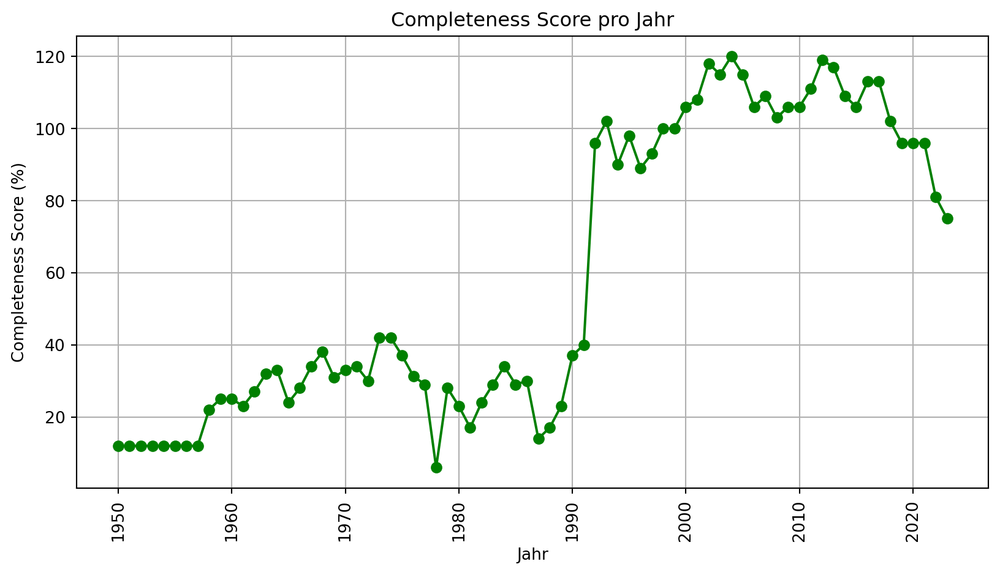
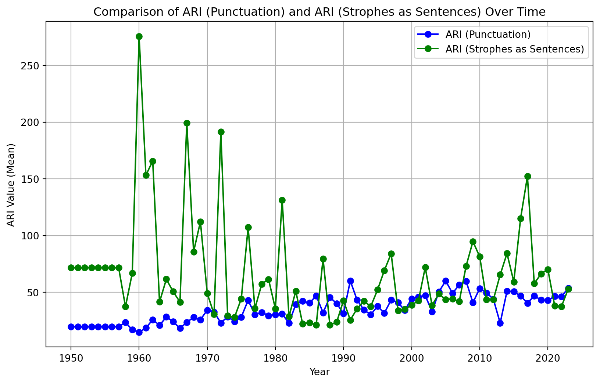

Die Entwicklung der Songtextkomplexität: Eine Analyse
Autor:in
Lukas Reinhardt
Veröffentlichungsdatum
13. September 2024
Zusammenfassung
Diese Arbeit [1] beschäftigt sich mit dem Thema, ob die Komplexität der Songtexte über die letzten Jahrzehnte abgenommen hat. Analysiert werden Daten aus den Jahren 1950 bis 2023. Bisherige Studien, wie die von Varnum et al. [2] und Choi und Downie [3], haben sich bereits mit dieser Entwicklung befasst. Diese Arbeit erweitert den Ansatz durch die Metriken TTR, Shannon-Index und ARI sowie die Berücksichtigung einzelner Genres. Ziel ist es, ein ganzheitlicheres Bild der Entwicklung der Textkomplexität zu erhalten. Die Ergebnisse zeigen, dass, wie in den bisherigen Studien [2–3], die lexikalische Vielfalt abgenommen hat, während der ARI eine gestiegene strukturelle Komplexität impliziert. Somit zeigt die Arbeit, dass die Songtexte zwar an lexikalischer Vielfalt verloren haben, gleichzeitig jedoch eine höhere strukturelle Komplexität erreicht wurde.
Einleitung
Die Musikindustrie hat sich in den letzten Jahrzehnten gewandelt, was sich möglicherweise auf die Songtexte populärer Musik ausgewirkt hat. Technologische Entwicklungen, wie Streamingdienste, machten Musik zunehmend zugänglicher und führten zu einer stärkeren Kommerzialisierung. Diese und andere Wandlungen könnten die lyrische Komplexität beeinflusst haben. Diese Arbeit untersucht, ob sich die Komplexität der Songtexte, gemessen an lexikalischer Vielfalt, Informationsdichte und struktureller Komplexität, im Laufe der Zeit verändert hat.
Problemstellung
Diese Arbeit untersucht, ob die Textkomplexität in den populärsten Musikstücken im Laufe der Jahrzehnte kontinuierlich abgenommen hat. Während frühere Studien [2–3] bereits Trends in der Komplexität von Songtexten analysierten, bleibt unklar, wie sich diese Entwicklungen in verschiedenen Genres im Vergleich zu den allgemeinen Top 100 Songs verhalten haben.
Ziele der Arbeit
Ziel dieser Arbeit ist es, die Entwicklung der Textkomplexität, in den Billboard Hot 100 [4] von 1950 bis 2023 zu analysieren. Dabei soll untersucht werden, ob Songtexte über die Jahrzehnte hinweg Veränderungen in Bezug ihrer Komplexität erfahren haben. Darüber hinaus wird betrachtet, wie diese Entwicklungen in verschiedenen Musikgenre wie Pop, Rock, Rap, R&B und Country im Vergleich zu den allgemeinen Trends der Billboard Hot 100 verhalten.
Aufbau der Arbeit
Diese Arbeit ist in mehrere Abschnitte gegliedert, nach der Einleitung folgen die verwandten Arbeiten, der relevante Studien zusammenfasst und deren Forschungsstand darlegt. In der Methodik werden verwendete Datenquellen, Metriken beschrieben. Anschließend werden die Ergebnisse der Metriken analysiert und interpretiert. Abschließend fasst das Fazit die wesentlichen Erkenntnisse zusammen und gibt Informationen für mögliche zukünftige Forschungen.
Verwandte Arbeit
Varnum et al. (2021) - Why are Song Lyrics Becoming Simpler?[2]
Vanum et al. untersuchten die lyrische Komplexität von über 14.000 Songs der Billboard Hot 100 zwischen 1958 und 2016. Sie nutzten die Komprimierbarkeit der Texte als Maß für lyrische Komplexität und stellten fest, dass in den Jahren mit mehr neuen Musikproduktionen einfachere Texte bevorzugt wurden. Die Analyse basiert auf LZ77-Komprimierungsalgorithmen, wodurch Wiederholungen in den Texten erfasst werden.
Zwar erfasst die Komprimierbarkeit Aspekte der lexikalischen Vielfalt, jedoch werden andere wichtige Dimensionen der lyrischen Komplexität, wie die Informationsdichte, nicht berücksichtigt. Zudem wird der Einfluss verschiedener Genres in dieser Untersuchung nicht näher beleuchtet.
Choi und Downie (2019) - A Trend Analysis on Concretness of Popular Song Lyrics [3]
Choi und Downie analysierten die Konkretisierung (Concreteness) der Songtexte populärer Musik von 1965 bis 2015. Concreteness bezieht sich auf die Greifbarkeit und Bildhaftigkeit von Wörtern, dabei sind konkrete Begriff wie “Auto” klarer definiert als abstrakte Begriffe wie “Liebe”. Die Studie zeigt, dass die Concreteness zunächst abnahm, dann aber mit dem Aufstieg von Genres wie Hip-Hop und Rap wieder anstieg.
Auch wenn die Metrik der Concreteness interessante Ergebnisse liefert, werden andere Aspekte der lyrischen Komplexität, wie die lexikalische Vielfalt und Informationsdichte, in dieser Studie nicht betrachtet. Diese könnten zusätzliche Perspektiven auf die Entwicklung der Songtexte liefern.
Beitrag dieser Arbeit
Im Gegensatz zu den genannten Studien verfolgt diese Arbeit einen umfassenderen Ansatz zur Bewertung der lyrischen Komplexität. Während frühere Untersuchungen, wie die von Varnum et al.[2] sowie Choi und Downie [3], spezifische Aspekte wie Komprimierbarkeit oder Konkretisierung betrachteten, wird hier die Vielfalt und Informationsdichte der Songtexte aus mehreren Perspektiven analysiert. Ein weiterer wichtiger Aspekt ist die Untersuchung der Entwicklung der Genres, die in den bisherigen Studien kaum betrachtet wurden. Dabei kann die Untersuchung das Genre zeigen, ob und wie sich die Genres und die Billboard Hot 100 [4] gegenseitig beeinflusst haben. Dadurch trägt diese Arbeit dazu bei, das Verständnis der lyrischen Komplexität zu erweitern und bietet neuen Einblicke auf die Veränderung in der Musikindustrie.
Hypothese
Die Hypothese, die in dieser Arbeit geprüft wird, lautet:
Die Qualität, Komplexität der Songtexte hat sich über die letzten Jahrzehnte verschlechtert.
Diese Annahme basiert auf bisherigen Studien, die auf eine Vereinfachung und Anstieg von Wiederholungen in populären Songs hinweisen. Besonders der Einfluss der Kommerzialisierung und die Dominanz bestimmter Musikgenres könnten dazu beigetragen haben, dass die Komplexität der Texte abgenommen hat.
Forschungsfrage
Die zentrale Forschungsfrage lautet:
Hat sich die Qualität der Songtexte in den letzten Jahrzenten verringert und wie unterscheidet sich diese Entwicklung im Vergleich zu einzelnen Musikgenres?
Diese Frage zielt darauf ab, sowohl die allgemeine Entwicklung der Songtexte zu untersuchen als auch zu analysieren, ob und wie sich Trends in spezifischen Genres zu den allgemeinen Entwicklungen unterscheiden.
Methodik
In diesem Kapitel wird der methodische Ansatz der Arbeit beschrieben, der sich auf die Sammlung, Vorverarbeitung und Analyse der Daten konzentriert.
Die Daten für die Arbeit stammen aus mehreren Quellen. Die Billboard API [4] liefert die grundlegenden Daten der Charts, die Genius API [5] wird genutzt, um die Songtexte dieser Daten zu beschaffen. Um eine Analyse der Textkomplexität in den verschiedenen Genres durchzuführen, wurden genrespezifische Songs ebenfalls bezogen. Die MusicBrainz API [6] wurde verwendet, um die fehlenden Genre-Informationen der Billboard Hot 100 zu ergänzen, dadurch konnten die am häufigsten vertretenden Genres identifiziert werden.
Code
# ausgangsdaten, die Billboard hot 100configurations = [ {"start_year": 1950,"end_year": 2023,"genre": None }]# Zuordnung von benutzerfreundlichen Genre-Namen zu Billboard-Chart-Namengenre_to_chart_map = {'pop': 'pop-songs','rock': 'rock-songs','hiphop': 'rap-song','rap': 'rap-song','country': 'country-songs','jazz': 'jazz-songs','classical': 'classical-albums','r&b': 'r-b-hip-hop-songs','electronic': 'dance-electronic-songs','all': 'hot-100'}
Billboard API und Genre-Crawling
Zuerst wurden die allgemeinen Billboard Hot 100 Songs von 1950 bis 2023 über die API bezogen. Diese Daten umfassen die 100 beliebtesten Songs in den jeweiligen Jahren, woraus sich 7399 Songs ergeben haben.
Zusätzlich wurden genrespezifische Charts von Billboard bezogen, um die Top-Songs der Genres zu erfassen. Diese genrespezifischen Songs dienen der Analyse, wie die einzelnen Genres sich entwickelt haben und die Billboard Hot 100 beeinflusst haben.
Code
def get_top_100_songs(year, genre=None): songs_data = []if genre:print(f"Fetching data for year: {year}, genre: {genre}")else:print(f"Fetching data for year: {year}")if genre: chart_name = genre_to_chart_map.get(genre.lower())ifnot chart_name:print(f"Genre '{genre}' not found. Skipping year {year}.")return pd.DataFrame() # Leeres DataFrame zurückgeben, wenn das Genre nicht gefunden wirdelse: chart_name ='hot-100'try: chart = billboard.ChartData(chart_name, date=f'{year}-12-31')for i, entry inenumerate(chart): songs_data.append({'Year': year,'Rank': i +1,'Title': entry.title,'Artist': entry.artist })exceptExceptionas e:print(f"Failed to fetch data for {year}, {genre}: {e}") time.sleep(1)return pd.DataFrame(songs_data)def write_to_csv(data, filename):""" Schreibt das DataFrame in eine CSV-Datei und hängt an, wenn die Datei existiert """ full_path = os.path.join(base_path, filename) mode ='a'if os.path.exists(full_path) else'w' header =not os.path.exists(full_path) data.to_csv(full_path, mode=mode, header=header, index=False)def process_configuration(config):""" Verarbeitet eine einzelne Konfiguration, ruft die Songdaten ab und speichert sie in einer CSV-Datei """ start_year = config['start_year'] end_year = config['end_year'] genre = config['genre'] filename =f'top_100_songs_{genre}_{start_year}_to_{end_year}.csv'if genre elsef'top_100_songs_{start_year}_to_{end_year}.csv' full_path = os.path.join(base_path, filename)if os.path.exists(full_path):print(f"File '{full_path}' already exists. Skipping crawling for this configuration.")returnprint(f"Fetching data for {start_year}-{end_year}, Genre: {genre if genre else'hot-100'}")for year inrange(start_year, end_year +1): data = get_top_100_songs(year, genre) write_to_csv(data, filename) finalize_csv(filename)def finalize_csv(filename): full_path = os.path.join(base_path, filename)if os.path.exists(full_path): final_data = pd.read_csv(full_path) final_data.sort_values(by=['Year', 'Rank'], ascending=[True, True], inplace=True) final_data.to_csv(full_path, index=False)print(f"Final sorted data saved in '{full_path}'.")def run_configuration(configurations):for config in configurations: process_configuration(config)run_configuration(configurations)
Code
# itteriere durch jede Konfiguration und zeige die ersten paar Zeilen jeder entsprechenden CSV-Datei anfor config in configurations:# Generiere den Dateinamen basierend auf der Konfiguration filename = (f'top_100_songs_{config["genre"] +"_"if config["genre"] else""}{config["start_year"]}_to_{config["end_year"]}.csv' ) full_path = os.path.join(base_path, filename)# Check, ob die Datei existiertif os.path.exists(full_path): data = pd.read_csv(full_path)print(f"Displaying the first few rows of data from: {full_path}") display(data.head())else:print(f"File '{full_path}' does not exist.")
Code
# Setze den User-Agent für die MusicBrainz APIUSER_AGENT = os.getenv('USER_AGENT')VERSION = os.getenv('VERSION')CONTACT = os.getenv('CONTACT')ifnot USER_AGENT ornot VERSION ornot CONTACT:raiseValueError("Bitte setzen Sie USER_AGENT, VERSION und CONTACT in der .env-Datei")musicbrainzngs.set_useragent(USER_AGENT, VERSION, CONTACT)def get_genre_from_musicbrainz(artist_name):""" Ruft das/die Genre(s) für einen gegebenen Künstler von der MusicBrainz API ab """try:# Suche nach dem Künstler in MusicBrainz result = musicbrainzngs.search_artists(artist=artist_name, limit=1)# Überprüfe, ob ein Ergebnis zurückgegeben wurdeif result['artist-list']: artist = result['artist-list'][0]# Extrahiere die Genre- oder Tag-Liste tags = artist.get('tag-list', [])# Extrahiere die Namen der Tags (Genres) genres = [tag['name'] for tag in tags]return', '.join(genres)else:returnNoneexceptExceptionas e:print(f"Error fetching genre for {artist_name}: {str(e)}")returnNonedef update_genres_in_dataframe(input_filename, output_filename):""" Aktualisiert das 'Genre'-Feld im DataFrame, indem Genres von MusicBrainz abgerufen werden. Speichert den aktualisierten DataFrame in einer neuen CSV-Datei. """if os.path.exists(output_filename):print(f"Datei '{output_filename}' existiert bereits. Überspringe den Crawling-Prozess.")return# Lade die Quelldaten df = pd.read_csv(input_filename) df['Genre'] = df['Artist'].apply(get_genre_from_musicbrainz) df['Genre'].fillna('Unknown', inplace=True) df.to_csv(output_filename, index=False)print(f"Data with genres saved in '{output_filename}'.")print(df.head())input_filename ='../data/top_100_songs_1950_to_2023.csv'output_filename ='../data/top_100_songs_1950_to_2023_with_genre.csv'update_genres_in_dataframe(input_filename, output_filename)
Code
df = pd.read_csv('../data/top_100_songs_1950_to_2023_with_genre.csv')# Definiere eine Liste von Genres, die gezählt werden sollen, mit möglichen Variationengenres_to_count = {'pop': r'\bpop\b','rock': r'\brock\b','classic': r'\bclassic\b','rap/hip-hop': r'\b(hip[- ]?hop|rap)\b', # Kombiniere 'hip-hop' und 'rap''80s': r'\b80s\b','country': r'\bcountry\b','r&b': r'\br&b\b','edm': r'\bedm\b', # Passt zu 'EDM' (Electronic Dance Music)'latin': r'\blatin\b', # Könnte Reggaeton, Salsa usw. einschließen'indie': r'\bindie\b','alternative': r'\balternative\b','reggae': r'\breggae\b',}
Auswahl der Genres
Die genrespezifischen Charts wurden basierend auf den fünf am häufigsten vertretenden Genres in den Billboard Hot 100 gewählt. Diese Daten wurden mithilfe der MusicBrainz API[6] ergänzt. Dies war nötig, da weder die Billboard API[4] noch die Genius API[5] Genres geliefert haben. Die von MusicBrainz gelieferten Genres waren jedoch nicht einheitlich, was eine genauere Auswertung der Daten erforderlich machte.
Nach einer Sichtung der initialen Daten wurden die am häufigsten auftretenden Genres aus der Liste der Subgenera und anderen Irregularitäten ausgewählt. Diese Auswahl wurde genutzt, um mittels eines Regex-basierten Verfahrens die inkonsistenten Daten auf, die am häufigsten vorkommen der Genres zu mappen und zu zählen (siehe Tabelle 1).
Code
# Funktion, um Genres in einem String mit regulären Ausdrücken zu zählendef count_genres_in_string(genre_string, genres_to_count):# Stelle sicher, dass genre_string ein String ist, andernfalls gib leere Zählungen zurückifnotisinstance(genre_string, str):return {genre: 0for genre in genres_to_count} genre_string = genre_string.lower() counts = {genre: 0for genre in genres_to_count}for genre, pattern in genres_to_count.items(): matches = re.findall(pattern, genre_string)if matches: counts[genre] =1return counts# Initialisiere ein Wörterbuch, um die Gesamtanzahl jedes Genres zu speicherngenre_counts = {genre: 0for genre in genres_to_count}# Zähle die Genres über das gesamte DataFrame hinwegfor genre_string in df['Genre']: counts = count_genres_in_string(genre_string, genres_to_count)for genre, count in counts.items(): genre_counts[genre] += countgenre_counts_df = pd.DataFrame(list(genre_counts.items()), columns=['Genre', 'Count'])genre_counts_df = genre_counts_df.sort_values(by='Count', ascending=False)display(genre_counts_df.style.hide(axis='index'))
Genre
Count
pop
4930
rock
3796
classic
2148
r&b
1393
country
1205
rap/hip-hop
1191
alternative
1072
indie
925
80s
546
reggae
271
latin
111
edm
55
Tabelle 1: Die Tabelle zeigt die Anzahl der Songs pro Genre, basierend auf den in den Billboard Hot 100 am häufigsten vertretenen Genres.
Diese Liste gibt uns Auskunft über die relevantesten Genres innerhalb der Billboard Hot 100. Wichtig ist zu betrachten, dass es auch doppelt belegte Songs gibt, wodurch aufsummieren der Genres keinen Sinn macht. Auf dieser Basis wurden die zu crawlenden Genre-Charts gewählt: Pop, Rock, R&B, Country, Rap. Diese wurden danach mittels Matching des Titels geprüft, ob sie auch in den Billboard Hot 100 vorhanden sind. Da Classic kein Matching hatte, wurde es aus den Top 5 entfernt und Rap stattdessen hinzugefügt. Durch dieses Matching haben wir ab etwa 1992 eine 60% Vollständigkeit der Billboard Daten in Form der Genres (siehe Abb. 1).
Code
def clean_column_names(df): df.columns = df.columns.str.strip() # Entfernt Leerzeichenreturn dfdef load_csv_file(file_path): full_path = os.path.join(base_path, file_path)if os.path.exists(full_path): df = pd.read_csv(full_path) df = clean_column_names(df)return dfelse:print(f"Datei '{full_path}' existiert nicht.")return pd.DataFrame()def calculate_completeness_score(main_data, genre_files, start_year, end_year):# Erstelle ein Dictionary, um Übereinstimmungen pro Jahr zu speichern matches_per_year = {year: 0for year inrange(start_year, end_year +1)}for genre_file in genre_files: genre_data = load_csv_file(genre_file)ifnot genre_data.empty:for year inrange(start_year, end_year +1): genre_year_data = genre_data[genre_data['Year'] == year] main_year_data = main_data[main_data['Year'] == year] overlap = pd.merge(genre_year_data, main_year_data, on=['Title', 'Artist'], how='inner') matches_per_year[year] +=len(overlap) total_matches =sum(matches_per_year.values()) total_songs_per_year = main_data.groupby('Year').size().to_dict() completeness_scores = {}for year inrange(start_year, end_year +1): total_songs = total_songs_per_year.get(year, 0)if total_songs >0: completeness_scores[year] = (matches_per_year[year] / total_songs) *100else: completeness_scores[year] =0 total_songs_in_main =sum(total_songs_per_year.values())if total_songs_in_main >0: overall_completeness_score = (total_matches / total_songs_in_main) *100else: overall_completeness_score =0return completeness_scores, overall_completeness_scoredef plot_completeness_scores(completeness_scores): years =list(completeness_scores.keys()) scores =list(completeness_scores.values()) plt.figure(figsize=(10, 5)) plt.grid(visible=True) plt.plot(years, scores, marker='o', color='green') plt.title('Completeness Score pro Jahr') plt.xlabel('Jahr') plt.ylabel('Completeness Score (%)') plt.xticks(rotation=90) plt.show()main_config =next(config for config in configurations if config["genre"] isNone)# Generiere den Dateinamen für die Hauptdatei basierend auf der Konfigurationmain_file =f'top_100_songs_{main_config["start_year"]}_to_{main_config["end_year"]}.csv'main_data = load_csv_file(main_file)# Generiere Dateinamen für die genrespezifischen Dateiengenre_files = [f'top_100_songs_{config["genre"]}_{config["start_year"]}_to_{config["end_year"]}.csv'if config["genre"] elsef'top_100_songs_{config["start_year"]}_to_{config["end_year"]}.csv'for config in configurations if config["genre"]]completeness_scores, overall_completeness_score = calculate_completeness_score(main_data, genre_files, 1950, 2023)plot_completeness_scores(completeness_scores)

Abbildung 1: Der Plot zeigt den Completeness Score der Top 100 Songs pro Jahr von 1950 bis 2023. Auf der x-Achse sind die Jahre, auf der y-Achse der Completeness Score in Prozent. Ein höherer Score bedeutet einen größeren Anteil genrespezifischer Songs in den Top 100 für das jeweilige Jahr.
Code
def generate_csv_filename(config, base_path=base_path):""" Generiert den Dateinamen für eine gegebene Konfiguration """ genre_part =f"{config['genre']}_"if config['genre'] else""return os.path.join(base_path, f"top_100_songs_{genre_part}{config['start_year']}_to_{config['end_year']}.csv")def get_all_csv_files(configurations):return [generate_csv_filename(config) for config in configurations]def load_source_data(csv_files):return pd.concat([pd.read_csv(file) forfilein csv_files], ignore_index=True)
Code
GENIUS_API_TOKEN = os.getenv('GENIUS_API_TOKEN')if GENIUS_API_TOKEN isNone:raiseValueError("Please set the GENIUS_API_TOKEN in the .env file")# Initialize Genius APIgenius = Genius(GENIUS_API_TOKEN)csv_files = get_all_csv_files(configurations)
Code
def search_song_info(song_title, artist_name, retries=3): base_url ='https://api.genius.com' headers = {'Authorization': f'Bearer {GENIUS_API_TOKEN}'} search_url = base_url +'/search' params = {'q': f'{song_title}{artist_name}'}for attempt inrange(retries):try: response = requests.get(search_url, headers=headers, params=params, timeout=10) response.raise_for_status() # Raises a HTTPError if the response code was unsuccessful search_results = response.json().get('response', {}).get('hits', [])if search_results:return search_results[0]['result']except (Timeout, ConnectionError) as e:print(f"Attempt {attempt+1} failed with error: {e}. Retrying...") time.sleep(2) # Wait for 2 seconds before retryingexceptExceptionas e:print(f"Failed to fetch {song_title} by {artist_name} with error: {e}")break# Exit the loop if an unexpected error occursreturnNone
Code
def get_song_details(song_title, artist_name, rank, year): song_info = search_song_info(song_title, artist_name)if song_info: song_id = song_info['id']try: song_data_response = genius.song(song_id) song_data = song_data_response['song'] lyrics = genius.lyrics(song_id) song_length = song_data.get('duration', 0) /1000# Convert milliseconds to seconds song_data_ordered = {'Rank': rank,'Year': year,'Artist': artist_name,'Title': song_title,'Genre': song_data['primary_artist'].get('genres', 'N/A') if'primary_artist'in song_data else'N/A','Duration': song_length,'Lyrics': lyrics,'Album': song_data['album']['name'] if'album'in song_data and song_data['album'] else'N/A','Song URL': song_info['url'],'Release Date': song_data.get('release_date', 'N/A'), }return song_data_orderedexcept (Timeout, ConnectionError) as e:print(f"Failed to fetch song details for {song_title} by {artist_name} with error: {e}")exceptExceptionas e:print(f"An unexpected error occurred: {e}")returnNone
Code
def fetch_and_store_song_lyrics(filename):""" Holt Songtexte und andere Details für jeden Song in der gegebenen CSV-Datei ab Protokolliert fehlgeschlagene Versuche und speichert erfolgreiche Abrufe """ log_filename = filename.replace(".csv", "_failed_log.csv") detailed_filename = filename.replace(".csv", "_with_lyrics.csv")if os.path.exists(detailed_filename): detailed_df = pd.read_csv(detailed_filename) existing_songs =set(zip(detailed_df['Title'], detailed_df['Artist']))else: detailed_df = pd.DataFrame() existing_songs =set() df = pd.read_csv(filename) all_song_details = [] failed_attempts = [] progress_bar = tqdm(df.iterrows(), total=df.shape[0], desc=f"Processing {filename}", leave=True)for index, row in progress_bar: song_title = row['Title'] artist_name = row['Artist'] rank = row['Rank'] year = row['Year']if (song_title, artist_name) in existing_songs: progress_bar.set_postfix_str(f"Skipping: {song_title}")continue song_details = get_song_details(song_title, artist_name, rank, year)if song_details: all_song_details.append(song_details) progress_bar.set_postfix_str(f"Fetched: {song_title}")else: failed_attempts.append({'Title': song_title, 'Artist': artist_name, 'Rank': rank, 'Year': year}) progress_bar.set_postfix_str(f"Failed: {song_title}")if all_song_details: new_details_df = pd.DataFrame(all_song_details) detailed_df = pd.concat([detailed_df, new_details_df], ignore_index=True) detailed_df.to_csv(detailed_filename, index=False) progress_bar.set_postfix_str(f"Updated data saved")if failed_attempts:withopen(log_filename, 'w', newline='', encoding='utf-8') as logfile: logwriter = csv.DictWriter(logfile, fieldnames=['Title', 'Artist', 'Rank', 'Year']) logwriter.writeheader() logwriter.writerows(failed_attempts) progress_bar.set_postfix_str(f"Failed attempts logged")
Code
def display_csv_files(csv_files):""" Zeigt die Liste der zu verarbeitenden CSV-Dateien an """print("Files to be processed:")for filename in csv_files:print(filename)def crawl_lyrics_using_billboard_data(csv_files):""" Crawlt Songtexte aus dem Web basierend auf Billboard-Daten in jeder CSV-Datei und überspringt bereits verarbeitete Dateien """for filename in csv_files: filename_with_lyrics = filename.replace(".csv", "_with_lyrics.csv")if os.path.exists(filename_with_lyrics):print(f"File '{filename_with_lyrics}' already exists. Skipping processing.")continueif os.path.exists(filename):print(f"Processing file: {filename}") fetch_and_store_song_lyrics(filename)else:print(f"File '{filename}' does not exist.")# Assuming 'configurations' is already definedcsv_files = get_all_csv_files(configurations)# Display the list of files to be processeddisplay_csv_files(csv_files)# Now process each file in the generated listcrawl_lyrics_using_billboard_data(csv_files)
Genius API für Songtexte
Nachdem die Billboard- und genrespezifischen Daten erfasst wurden, war die Abrufung der Songtexte über die Genius API[5] der nächste Schritt. Genius bietet eine umfangreiche Datenbank für Songtexte, die für die Untersuchung der linguistischen Komplexität eine zentrale Rolle spielt. Für jeden Song der allgemeinen Billboard Hot 100 und der genrespezifischen Top-Songs wurde eine Anfrage an die Genius-API gestellt, um den vollständigen Songtext sowie weitere Metadaten abzurufen. Daraus resultierte folgende Datenvollständigkeit im Bezug auf die jeweiligen Top-Listen, wie in Tabelle Tabelle 2 zu sehen ist:
Code
def count_songs_and_calculate_completeness(csv_files, genre_names): results = []for i, fileinenumerate(csv_files):# Lade die Original-CSV-Datei df = pd.read_csv(file) total_songs =len(df)# Lade die _with_lyrics-CSV-Datei with_lyrics_file =file.replace('.csv', '_with_lyrics.csv') df_with_lyrics = pd.read_csv(with_lyrics_file) songs_with_lyrics =len(df_with_lyrics)# Berechne den Vollständigkeitsgrad completeness_score = (songs_with_lyrics / total_songs) *100# Speichere die Ergebnisse in der gewünschten Tabellenform results.append({'Genre': genre_names[i],'Songanzahl': total_songs,'Lyrics': songs_with_lyrics,'Vollständigkeit': f"{completeness_score:.2f}%"# Format mit zwei Dezimalstellen }) results_df = pd.DataFrame(results)return results_dfcsv_files = get_all_csv_files(configurations) # Deine bestehenden CSV-Dateiengenre_names = [config["genre"] if config["genre"] isnotNoneelse"Hot 100"for config in configurations]results_df = count_songs_and_calculate_completeness(csv_files, genre_names)results_df_transposed = results_df.set_index('Genre').transpose()results_df_transposed
Genre
Hot 100
pop
rock
country
rap
r&b
Songanzahl
7399
2960
3700
4820
2265
5280
Lyrics
7165
2880
3693
4673
2164
5106
Vollständigkeit
96.84%
97.30%
99.81%
96.95%
95.54%
96.70%
Tabelle 2: Tabelle zeigt die Vollständigkeit der Songtexte in den Top-Listen der Billboard Hot 100 und genrespezifischen Charts basierend auf der Anzahl der Songs mit verfügbaren Songtexten. Die Vollständigkeit gibt den Prozentsatz der Songs an, für die Songtexte über die Genius API abrufbar waren.
Code
main_file = os.path.join(base_path, "top_100_songs_1950_to_2023_with_lyrics.csv")def load_csv_file(filename):return pd.read_csv(filename)# Genres basierend auf Überschneidungen zuzuweisen und mehrere Genres zu behandelndef assign_genres_to_main_data(main_data, genre_data, start_year, end_year, genre_name):for year inrange(start_year, end_year +1):# Filtere Daten für das aktuelle Jahr genre_year_data = genre_data[genre_data['Year'] == year] main_year_data = main_data[main_data['Year'] == year]# Finde sich überschneidende Songs nach Titel und Künstler overlap = pd.merge(genre_year_data, main_year_data, on=['Title', 'Artist'], how='inner')# Weise das Genre den übereinstimmenden Zeilen in den Hauptdaten zufor _, row in overlap.iterrows(): current_genre = main_data.loc[(main_data['Title'] == row['Title']) & (main_data['Artist'] == row['Artist']), 'Genre'].values[0]if pd.isna(current_genre) or current_genre =='':# Wenn kein Genre existiert, weise das neue Genre zu main_data.loc[(main_data['Title'] == row['Title']) & (main_data['Artist'] == row['Artist']), 'Genre'] = genre_nameelse:# Wenn bereits ein Genre existiert, füge das neue Genre hinzuif genre_name notin current_genre.split(','): updated_genre = current_genre +', '+ genre_name main_data.loc[(main_data['Title'] == row['Title']) & (main_data['Artist'] == row['Artist']), 'Genre'] = updated_genrereturn main_datadef process_and_save_data(main_file, configurations): main_data = load_csv_file(main_file)# Lade die "no genre" Daten no_genre_data = pd.DataFrame()for config in configurations:if config["genre"] isNone: no_genre_file = os.path.join(base_path, f'top_100_songs_{config["start_year"]}_to_{config["end_year"]}.csv') no_genre_data = load_csv_file(no_genre_file)break# iterriere durch Genre-Konfigurationen und verarbeite Überschneidungenfor config in configurations:if config["genre"]: genre_file = os.path.join(base_path, f'top_100_songs_{config["genre"]}_{config["start_year"]}_to_{config["end_year"]}.csv') genre_data = load_csv_file(genre_file)ifnot genre_data.empty:# Weise Genres den Hauptdaten zu main_data = assign_genres_to_main_data(main_data, genre_data, config["start_year"], config["end_year"], config["genre"])# Speichere die aktualisierten Daten output_file = os.path.join(base_path, 'completed_data.csv') main_data.to_csv(output_file, index=False)print(f"Abgeschlossene Daten gespeichert in {output_file}")process_and_save_data(main_file, configurations)
Auswahl der Komplexitätsmetriken
Für die Analyse der Komplexität von Songtexten wurden mehrere Metriken in Betracht gezogen, um Vielfalt, Informationsdichte und Vorhersagbarkeit der verwendeten Wörter zu messen. Insgesamt wurden fünf Metriken evaluiert, von denen drei ausgewählt wurden.
Code
from nltk.tokenize import RegexpTokenizer# Verwende RegexpTokenizer anstelle von word_tokenizetokenizer = RegexpTokenizer(r'\w+')file_path = os.path.join(base_path, 'completed_data.csv')data = pd.read_csv(file_path)data['Lyrics'] = data['Lyrics'].astype(str) # Um sicherzustellen, dass alle Lyrics als Strings vorliegen
Type-Token-Ratio (TTR)
Die Type-Token-Ratio (TTR) misst die lexikalische Vielfalt eines Textes durch das Verhältnis zwischen der Anzahl der einzigartigen Wörter (Types) und der Gesamtanzahl der Wörter (Tokens). Ein hoher TTR-Wert deutet auf eine große Wortvielfalt hin, während ein niedriger Wert häufige Wiederholungen anzeigt. \[
\text{TTR} = \frac{\text{Anzahl der eindeutigen Wörter (Types)}}{\text{Gesamtanzahl der Wörter (Tokens)}}
\]
Code
def ttr_calc(text): tokens = tokenizer.tokenize(text.lower())iflen(tokens) ==0:return0 unique_tokens =set(tokens) ttr =len(unique_tokens) /len(tokens)return ttr# Wende die TTR-Berechnung auf die Lyrics-Spalte andata['TTR'] = data['Lyrics'].apply(ttr_calc)
Diese Metrik wurde aufgrund ihrer Einfachheit und Aussagekraft als ein Hauptmaß für die Analyse der Wortvielfalt in Songtexten ausgewählt. TTR bietet einen direkten Einblick in die sprachliche Vielfalt, die einen zentralen Aspekt der Textkomplexität darstellt. Die Wahl dieser Metrik basiert auf ihrer Fähigkeit, Unterschiede in der Verwendung von Wörtern klar darzustellen und so relevante Aussagen zur Komplexität der Songtexte zu ermöglichen.
Shannon-Index (Entropie)
Der Shannon-Index misst die Unvorhersehbarkeit und Gleichmäßigkeit der Wortverteilung in einem Text. Ein höherer Shannon-Wert deutet auf eine gleichmäßige Verteilung der Wörter hin, während ein niedriger Wert darauf hinweist, dass bestimmte Wörter im Text dominieren. \[
H = - \sum p_i \cdot \log_2(p_i)
\] wobei \(p_i\) die Wahrscheinlichkeit des Auftretens jedes Wortes ist.
Code
def shannon_calc(text): tokens = tokenizer.tokenize(text.lower()) token_counts = Counter(tokens) total_tokens =len(tokens)if total_tokens ==0:return0 shannon_entropy =-sum((count / total_tokens) * log(count / total_tokens, 2) for count in token_counts.values())return shannon_entropy# Wende die Shannon-Berechnung auf die Lyrics-Spalte andata['Shannon'] = data['Lyrics'].apply(shannon_calc)
Im Vergleich zur TTR berücksichtigt der Shannon-Index nicht nur die Anzahl der unterschiedlichen Wörter, sondern auch deren Verteilungshäufigkeit. Dadurch bietet er eine tiefere Analyse der Textstruktur, indem er aufzeigt, ob die Wortverteilung ausgeglichen ist oder von wenigen Wörtern dominiert wird. Diese zusätzliche Dimension der Komplexitätsmessung, die sowohl die Vielfalt als auch die Gleichmäßigkeit erfasst, macht den Shannon-Index zu einer wichtigen Ergänzung der Analyse.
Automated Readability Index (ARI)
Der Automated Readability Index (ARI) bewertet die Lesbarkeit eines Textes basierend auf der Anzahl der Wörter, Zeichen und Sätze. Für die Berechnung wurden Satzzeichen wie Punkte, Fragezeichen und Ausrufezeichen als Satzgrenzen definiert, um stabile und vergleichbare Ergebnisse zu gewährleisten.
\[
\text{ARI} = 4.71 \cdot \left( \frac{\text{Anzahl der Zeichen}}{\text{Anzahl der Wörter}} \right) + 0.5 \cdot \left( \frac{\text{Anzahl der Wörter}}{\text{Anzahl der Sätze}} \right) - 21.43
\]
Code
# Standard-ARI-Berechnung (basierend auf Satzzeichen)def ari_calc(text): words = tokenizer.tokenize(text) num_words =len(words) num_chars =sum(len(word) for word in words) num_sentences = text.count('.') + text.count('!') + text.count('?')if num_words ==0or num_sentences ==0:return0 ari =4.71* (num_chars / num_words) +0.5* (num_words / num_sentences) -21.43return ari# ARI-Berechnung basierend auf Strophen als Sätzedef ari_strophes_as_sentences(text): words = tokenizer.tokenize(text) num_words =len(words) num_chars =sum(len(word) for word in words) strophes = [s for s in text.split('\n\n') if s.strip()] num_sentences =len(strophes)if num_words ==0or num_sentences ==0:return0 ari =4.71* (num_chars / num_words) +0.5* (num_words / num_sentences) -21.43return ari# Funktionen anwenden und Ergebnisse speicherndata['ARI'] = data['Lyrics'].apply(ari_calc)data['ARI_Strophes'] = data['Lyrics'].apply(ari_strophes_as_sentences)# Zeitreihenplot für "Strophes as Sentences" und "ARI (Punctuation)" erstellenif'Year'in data.columns:# Daten nach Jahr aggregieren und die mittleren ARI-Werte pro Jahr berechnen ari_by_year_filtered = data.groupby('Year')[['ARI', 'ARI_Strophes']].mean() plt.figure(figsize=(10, 6)) plt.plot(ari_by_year_filtered.index, ari_by_year_filtered['ARI'], label='ARI (Punctuation)', color='blue', marker='o') plt.plot(ari_by_year_filtered.index, ari_by_year_filtered['ARI_Strophes'], label='ARI (Strophes as Sentences)', color='green', marker='o') plt.xlabel('Year') plt.ylabel('ARI Value (Mean)') plt.title('Comparison of ARI (Punctuation) and ARI (Strophes as Sentences) Over Time') plt.legend() plt.grid(True) plt.show()else:print("The dataset doesn't have a 'Year' column for a time series plot.")

Abbildung 2: Vergleich der durchschnittlichen ARI-Werte pro Jahr basierend auf Zeichensetzung (ARI) und Strophen als Sätze (ARI Strophen). Der Plot zeigt die Entwicklung beider Berechnungsmethoden zur Lesbarkeitsbewertung über den Zeitverlauf.
Code
# Speichere die berechneten Werte in einer neuen Datei abdata.to_csv('../data/completed_data_calculations.csv', index=False)
Diese Methode wurde gegenüber einer alternativen Variante bevorzugt, die Strophen als Satzgrenzen nutzte, da die ungleichmäßige Struktur vieler Songs (z. B. kurze Zeilen oder häufige Strophenwechsel) in dieser Version zu starken Schwankungen führte(siehe Abb. 2). Die Standardmethode erwies sich hingegen als konsistenter und besser geeignet für die Analyse von Songtexten.
Der ARI liefert eine wichtige Perspektive auf die strukturelle Komplexität der Texte und ergänzt die Metriken zur Messung der lexikalischen Vielfalt und Informationsdichte. Er wurde, aufgrund seiner Fähigkeit die Lesbarkeit präzise zu erfassen, als eine der Hauptmetriken ausgewählt.
Chao1- und Chao2-Estimatoren
Die Chao1- und Chao2-Estimatoren schätzen die versteckte Vielfalt eines Textes, indem sie seltene Wörter und Wortkombinationen besonders berücksichtigen. Chao1 fokussiert sich auf die Anzahl seltener Wörter, während Chao2 zusätzlich deren Kombinationen einbezieht.
Beide Metriken basieren auf Schätzungen und bieten theoretische Einblicke in die potenzielle Vielfalt eines erweiterten Textes. Da der Schwerpunkt dieser Analyse jedoch auf der tatsächlichen Verteilung und Nutzung der Wörter liegt, wurden Chao1 und Chao2 zugunsten direkterer Metriken wie TTR, Shannon-Index und ARI verworfen, die eine präzisere Analyse der realen Textkomplexität ermöglichen.
Zusammenfassung der Metrikauswahl
Die Kombination von TTR, Shannon-Index und ARI wurde gewählt, um eine umfassende Analyse der Songtext-Komplexität zu ermöglichen. TTR misst die Wortvielfalt, der Shannon-Index die Verteilung der Wörter, und ARI bewertet die Lesbarkeit der Texte. Diese drei Metriken bieten zusammen eine ausgewogene Betrachtung der sprachlichen und strukturellen Komplexität.
Code
# Gruppiere nach 'Year' und berechne den Mittelwert für jede Metrikyearly_avg = data.groupby('Year').agg({'TTR': 'mean','ARI': 'mean','Shannon': 'mean'}).reset_index()
Auswertung der Ergebnisse
Hier werden die Ergebnisse der Zeitreihenanalyse zusammengefasst, Dabei wurden die durchschnittlichen Werte der Metriken jährlich aggregiert und genrespezifisch verglichen, um festzustellen, ob die Komplexität der Songtexte abgenommen hat und wie die Genres die Billboard Hot 100 beeinflusst haben und ob dieser Einfluss auch umgekehrt stattgefunden hat.
Abbildung 3: Die Grafik zeigt die Entwicklung der normalisierten Werte von TTR (orange), ARI (blau) und Shannon-Index (grün) über die Jahre hinweg, basierend auf den “Billboard Hot 100”. Abgebildet sind die lexikalische Vielfalt (TTR), die Lesbarkeit (ARI) und die Wortverteilung (Shannon) der Songtexte von 1950 bis 2023.
Die Analyse der TTR, welche die lexikalische Vielfalt in den Songtexten über die Jahre hinweg widerspiegelt, repräsentiert sich mit einer stabilen Entwicklung in den 1950er Jahren, was folgern lässt, dass sich die Verwendung der unterschiedlichen Wörter in der Zeit wenig verändert hat. Ab den 1960er Jahren ist jedoch ein deutlicher Anstieg zu verzeichnen, der seinen Höhepunkt um 1965 erreicht. Dies kann auf eine Phase kreativer Experimente hinweisen, in der abwechslungsreichere Wörter in den Songtexten verwendet wurden. Ab 1965 ist ein Rückgang der TTR zu erkennen, bis in die frühen 2000er Jahre. In dieser Phase wurden Songs potenziell immer weniger vielfältig. Der Rückgang des Vokabulars lässt auf eine Vereinfachung der Texte schließen. In den 2000er erlebt die TTR wieder einen Aufwärtstrend, was auf eine steigende lexikalische Vielfalt hinweist. Dieser Trend hielt aber nur bis 2017 an. Von da an begibt die TTR sich auf einen Abwärtstrend, den sie bis einschließlich 2023 beibehält, was auf einen erneuten Trend zu einem weniger umfangreichen Vokabular schließen lässt. Insgesamt ist die TTR seit 1950 gefallen.
Der Average Readability Index (ARI) beginnt in den frühen 1950er Jahren mit niedrigen Werten. Dies lässt auf eine geringe strukturelle Komplexität in dieser Zeit deuten. Ein Tiefpunkt wird um das Jahr 1960 erreicht, was darauf schließen lässt, dass Songtexte aus dieser Zeit besonders leicht zu lesen waren. Ab den 1960er Jahren gab es aber einen Aufwärtstrend und man konnte einen Anstieg des ARI verfolgen. Dieser Anstieg der Textkomplexität wird fortgeführt bis einschließlich 1990. 1990 und zwischen 2000 und 2010 gab es vermehrt starke Spikes in dem ARI, was darauf hindeutet, dass die Texte mehr und mehr an Komplexität gewinnen. Diese Phase flachte aber schnell wieder ab, jedoch bleibt der ARI seit 2010 auf einem höheren Niveau, was darauf schließen lässt, dass die Komplexität der Texte im Vergleich zu den früheren Jahrzehnten angestiegen ist. Der Stand von 2023 liegt nahe an den historischen Höchstwerten und zeigt, dass die Songtexte über die Zeit hinweg eine insgesamt höhere Komplexität erreicht haben.
Der Shannon-Index zeigt eine ähnliche Entwicklung wie der ARI. In den 1950er Jahren bis 1970er Jahren steigt der Wert kontinuierlich an, was auf eine zunehmende Vielfalt in der Wortverteilung schließen lässt. Zwischen 1977 und 1983 fällt der Index jedoch in eine Tiefphase, was darauf schließen lässt, dass die Texte in dieser Zeit eine geringere Vielfalt aufweisen und von häufig wiederholten Wörtern dominiert wurden. Nach dieser Phase erholt sich der Index wieder und bleibt bis in die 2000er Jahre stabil. Seit 2020 zeigt sich allerdings ein Rückgang des Shannon-Index, was auf einen Rückgang der Vielfalt in der Wortverteilung hindeutet. Dieser Rückgang unterscheidet sich von der Entwicklung des ARI, der seit 2020 weiterhin ansteigt. Während der ARI auf eine zunehmende strukturelle Komplexität der Songtexte hinweist, deutet der sinkende Shannon-Index darauf hin, dass die Vielfalt der verwendeten Wörter abnimmt und bestimmte Wörter häufiger wiederholt werden.
Code
def process_genre_file(filename, genre): output_filename =f"../data/{genre}_calculations.csv"if os.path.exists(output_filename):print(f"File {output_filename} already exists. Skipping.")return data = pd.read_csv(filename)# Berechnet TTR, ARI und Shannon für jeden Songtext data['TTR'] = data['Lyrics'].apply(ttr_calc) data['ARI'] = data['Lyrics'].apply(ari_calc) data['Shannon'] = data['Lyrics'].apply(shannon_calc)# Speichert die Berechnungen in einer neuen Datei im Hauptordner data.to_csv(output_filename, index=False)print(f"Processed and saved: {output_filename}")# Liste der Genre-Dateien und ihrer Namengenre_files = [ ("../data/top_100_songs_country_1950_to_2023_with_lyrics.csv", "country"), ("../data/top_100_songs_pop_1950_to_2023_with_lyrics.csv", "pop"), ("../data/top_100_songs_r&b_1950_to_2023_with_lyrics.csv", "r&b"), ("../data/top_100_songs_rap_1950_to_2023_with_lyrics.csv", "rap"), ("../data/top_100_songs_rock_1950_to_2023_with_lyrics.csv", "rock")]for filename, genre in genre_files: process_genre_file(filename, genre)
Analyse der Genres im Vergleich zur Billboard Hot 100
In der folgenden Analyse werden die Unterschiede und Gemeinsamkeiten zwischen den einzelnen Genres im Vergleich zu den allgemeinen Trends der Billboard Hot 100 Songs untersucht. Der Fokus liegt dabei auf der Frage, ob und wie stark die spezifischen Trends der Genres die allgemeinen Entwicklungen in der lexikalischen Vielfalt (TTR), der strukturellen Komplexität (ARI) und der Wortverteilung (Shannon-Index) beeinflusst haben. Ziel ist es, zu untersuchen, ob die einzelnen Genres den Gesamtdurchschnitt geprägt oder ob sich signifikante Abweichungen von den Billboard Hot 100 Trends in den genrespezifischen Entwicklungen zeigen.
Abbildung 4: Die Grafik zeigt die Entwicklung der lexikalischen Vielfalt (TTR) über die Jahre hinweg für die Billboard Hot 100 Charts im Vergleich zu verschiedenen Musikgenres (Pop, Rock, Rap, R&B und Country). Sie veranschaulicht, wie sich die Wortvielfalt in den Songtexten von 1950 bis 2023 entwickelt hat.
Pop-Songs lagen überwiegend unter dem TTR-Durschnitt der Billboard 100, was auf ihren Beitrag zum Rückgang der lexikalischen Vielfalt deutet. Ab 2018 verzeichnet sie einen kurzzeitigen Anstieg über den Billboard-Durschnitt, der sich bis 2023 wieder umkehrte. Pop folgte somit insgesamt dem Abwärtstrend des Billboard-TTR und trug zur negativen Entwicklung bei.
Rap startete mit einem höheren TTR als die Billboard-Charts und blieb bis 2005 über dem Durchschnitt. Danach näherten sich die Werte dem allgemeinen Billboard-TTR an, blieben aber zumeist darüber. Der sinkende TTR des Rap-Genres bis 2023 spiegelt den allgemeinen Abwärtstrend wider, was zeigt, dass Rap ähnlich wie Pop einen signifikanten Einfluss auf die allgemeine Entwicklung des Billboard-TTR hatte.
Rock zeigte ab 2008 zunächst TTR-Werte unter dem Billboard-Durchschnitt. Doch in den letzten Jahren, insbesondere ab 2023, verzeichnete Rock einen steigenden Trend und übertraf sowohl Pop als auch den allgemeinen Billboard-TTR. Rock hat sich somit entgegen dem allgemeinen Abwärtstrend entwickelt, was auf einen positiven Einfluss auf die lexikalische Vielfalt hinweist, der sich jedoch weniger stark auf die Billboard Hot 100 insgesamt auswirkte.
R&B begann mit einem höheren TTR als die Billboard-Charts, folgte jedoch bald den allgemeinen Auf- und Abwärtstrends der Billboard Hot 100. Diese parallele Entwicklung verdeutlicht, dass R&B einen starken Einfluss auf den Verlauf der Billboard-Charts hatte, da die Trends des Genres eng mit den allgemeinen Bewegungen der Billboard Hot 100 verknüpft waren und somit maßgeblich zu deren Entwicklung beitrugen.
Country verlief zunächst parallel zu den Billboard-Werten, bevor es in den 1970er Jahren einen eigenständigen, steigenden Trend entwickelte. Dieser positive Trend setzte sich bis in die 2020er Jahre fort, während der Billboard-TTR weiter fiel. Dies zeigt, dass Country sich zunehmend von den allgemeinen Billboard-Trends abkoppelte und daher weniger Einfluss auf deren Verlauf hatte.
Code
# Plot ARIplot_estimator_plotly('ARI')
Abbildung 5: Die Grafik zeigt die Entwicklung der strukturellen Komplexität (ARI) über die Jahre hinweg für die Billboard Hot 100 Charts im Vergleich zu verschiedenen Musikgenres (Pop, Rock, Rap, R&B und Country). Sie veranschaulicht, wie sich die Lesbarkeit der Songtexte von 1950 bis 2023 verändert hat.
Sowohl Pop als auch Rock folgen weitgehend den ARI-Trends der Billboard Hot 100, die eine zunehmende Informationsdichte und Textkomplexität in den Songtexten widerspiegeln. Ab 2021 hebt sich Pop jedoch stark von den Billboard Hot 100 ab, indem es eine höhere ARI und somit komplexere Texte aufweist. Rock bleibt hingegen knapp unter dem ARI-Durchschnitt der Billboard Hot 100, was bedeutet, dass die Textkomplexität in Rock-Songs zwar ansteigt, aber nicht ganz das Niveau der Billboard Hot 100 erreicht.
Rap und R&B zeigen ebenfalls eine enge Verbindung zu den allgemeinen Trends der Billboard Hot 100, weichen jedoch häufig positiv ab. Rap zeigt dabei stärkere Abweichungen als R&B. Seit 2013 haben sich beide Genres zunehmend von den Billboard-Trends entfernt und zeigen einen positiven Verlauf, was darauf hindeutet, dass sie möglicherweise einen positiven Einfluss auf die allgemeine Entwicklung der Billboard Hot 100 hatten. Gegen 2023 zeigt Rap einen Abwärtstrend, während R&B weiterhin ansteigt. Beide Genres bleiben jedoch nahe beieinander, während die Billboard Hot 100 ebenfalls einen leichten Aufwärtstrend verzeichnet, allerdings mit etwas Abstand.
Country folgt grundsätzlich den Auf- und Abwärtstrends der Billboard Hot 100, bleibt jedoch durchgängig mit einem deutlichen negativen Abstand zurück. Dies deutet darauf hin, dass die Informationsdichte und Textkomplexität in Country-Songs zwar den allgemeinen Trends der Billboard Hot 100 folgen, aber deutlich weniger ausgeprägt sind.
Code
# Plot Shannonplot_estimator_plotly('Shannon')
Abbildung 6: Die Grafik zeigt die Entwicklung der Gleichmäßigkeit der Wortverteilung (Shannon-Index) über die Jahre hinweg für die Billboard Hot 100 Charts im Vergleich zu verschiedenen Musikgenres (Pop, Rock, Rap, R&B und Country). Sie veranschaulicht, wie sich die Verteilung der Wörter in den Songtexten von 1950 bis 2023 entwickelt hat.
Seit etwa 1990 folgt der Shannon-Index von Pop dem Verlauf der Billboard Hot 100, bleibt jedoch stets leicht darunter, was auf eine geringere Wortvielfalt in Pop-Songs im Vergleich zur allgemeinen Musikindustrie hindeutet. Ab 2003 nähert sich der Index stärker an den der Hot 100 an. Im Jahr 2023 fällt der Shannon-Index sowohl für Pop als auch für die Hot 100, wobei der Rückgang bei Pop deutlicher ausfällt.
Rock lag über viele Jahre hinweg deutlich unter den Billboard Hot 100, verzeichnete jedoch 2023 einen Anstieg, bei dem der Shannon-Index sowohl Pop als auch die Hot 100 übertraf. Dies deutet auf eine gestiegene Wortvielfalt in Rock-Songs hin, die nun die allgemeinen Charts übertroffen hat.
Rap behielt über viele Jahre einen größeren Abstand zu den Hot 100 bei, wobei der Shannon-Index durchgängig höher war. Auch 2023 zeigt Rap einen steigenden Trend, was auf eine zunehmende Wortvielfalt hindeutet und möglicherweise positiv auf die Hot 100 gewirkt hat. R&B hingegen spiegelte lange Zeit die Trends der Hot 100 wider, was auf eine enge Verbindung zwischen R&B und den allgemeinen Entwicklungen hinweist. Ab 1980 begann sich jedoch ein Abstand aufzubauen, der bis 1990 andauerte. Danach verlief der R&B-Index wieder parallel zu den Hot 100, diesmal jedoch mit einem positiven Abstand.
Country folgte zunächst nahezu deckungsgleich den Hot 100, entfernte sich jedoch ab den 1970er Jahren deutlich. Ab 1990 näherten sich beide erneut an, und Country spiegelte danach fast vollständig die Trends der Hot 100 wider, was darauf hindeutet, dass die allgemeine Musikindustrie einen stärkeren Einfluss auf die Entwicklung von Country hatte als umgekehrt.
Fazit
Zusammenfassend lässt sich sagen, dass die Hypothese, die von einer Verschlechterung der Songtextkomplexität ausgeht, nicht bestätigt werden kann. Zwar hat die lexikalische Vielfalt (gemessen durch die TTR) im Laufe der Jahrzehnte abgenommen, was darauf hinweist, dass sich die Songtexte durch eine stärkere Wiederholung von Wörtern und eine eingeschränkte sprachliche Vielfalt auszeichnen. Allerdings zeigt der Shannon-Index, dass die Verteilung der Wörter gleichmäßiger geworden ist. Dies bedeutet, dass die wiederholten Wörter besser im Text verteilt sind, was auf eine gleichmäßigere Verteilung der Begriffe hindeutet. Parallel dazu hat die strukturelle Komplexität der Texte (gemessen durch den ARI) erheblich zugenommen. Die Songtexte sind über die Jahre hinweg insgesamt komplexer geworden.
Insgesamt lässt sich festhalten, dass die Songtexte zwar in Bezug auf die lexikalische Vielfalt etwas verloren haben, jedoch an Wortverteilung und struktureller Komplexität gewonnen haben. Die Qualität der Songtexte hat sich in Bezug auf ihre Komplexität somit nicht verschlechtert.
Im nächsten Schritt wird diese Analyse auf genrespezifische Entwicklungen ausgeweitet, um zu untersuchen, ob bestimmte Musikrichtungen ähnliche oder abweichende Trends aufweisen.
Die genrespezifische Analyse zeigt deutliche Unterschiede: Pop hat mit seiner geringeren lexikalischen Vielfalt die negative Tendenz der Billboard Hot 100 verstärkt. Rap und R&B hingegen weisen eine höhere Vielfalt und Komplexität auf und haben somit positiv auf die allgemeinen Trends eingewirkt. Rock, obwohl es sich in den letzten Jahren positiv entwickelt hat, zeigt aktuell wenig Einfluss auf die Billboard Hot 100. Country folgt zwar den Billboard-Trends, bleibt jedoch durchgängig weniger komplex.
Diese genrespezifischen Entwicklungen verdeutlichen, dass einige Genres, wie Rap und R&B, die Qualität der Songtexte positiv beeinflusst haben, während andere, wie Pop und Country, eher zur Vereinfachung beigetragen haben.
Einschränkungen
Eine der wichtigsten Einschränkungen dieser Arbeit lag bei den verfügbaren Daten. Die Informationen zu den einzelnen Genres waren nicht immer vollständig verfügbar, besonders in den frühen Jahrzehnten, als einige Musikrichtungen noch nicht so stark ausgeprägt waren oder schlecht dokumentiert wurden. Dadurch war es schwer, genau zu beurteilen, wie viel Einfluss die Genres in bestimmten Jahrzehnten hatten.
Gerade für Genres, die erst später populär wurden, fehlen in manchen Zeiträumen verlässliche Daten, was die Aussagekraft der Analyse in diesen Jahren beeinträchtigen könnte. Diese Unvollständigkeit sollte bei der Interpretation der genrespezifischen Ergebnisse immer mit bedacht werden.
Zukünftige Forschung
Eine vielversprechende Erweiterung der Forschung wäre die Analyse der Komplexität von Songtexten in anderen Sprachen, insbesondere in der deutschen Musik. Durch die Untersuchung, ob sich die lyrische Komplexität in deutschsprachigen Songs ähnlich wie in englischsprachigen Songs entwickelt hat, könnten wertvolle Einblicke in sprachliche und kulturelle Unterschiede in der Musik gewonnen werden.
Darüber hinaus könnte der Einfluss technologischer Entwicklungen, wie Streaming-Plattformen, AI-generierter Musik oder sozialer Medien, auf die lyrische Komplexität weiter erforscht werden. Diese Innovationen haben die Art und Weise, wie Musik produziert und konsumiert wird, grundlegend verändert und könnten die Vielfalt und Komplexität der Songtexte signifikant beeinflusst haben.
M. E. W. Varnum, J. A. Krems, C. Morris, A. S. Wormley, & I. Grossmann, Why are song lyrics becoming simpler? a time series analysis of lyrical complexity in six decades of American popular music. PLoS ONE, 16 (2021). https://doi.org/10.1371/journal.pone.0244576.
3.
K. Choi & J. S. Downie, A Trend Analysis on Concreteness of Popular Song Lyrics. Proceedings of the 6th International Conference on Digital Libraries for Musicology, (2019). https://doi.org/10.1145/3358664.3358673.